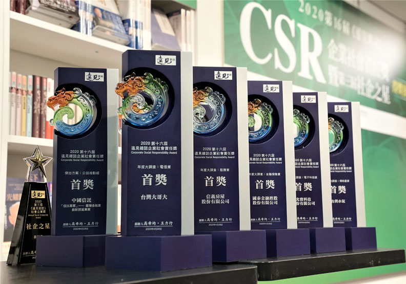
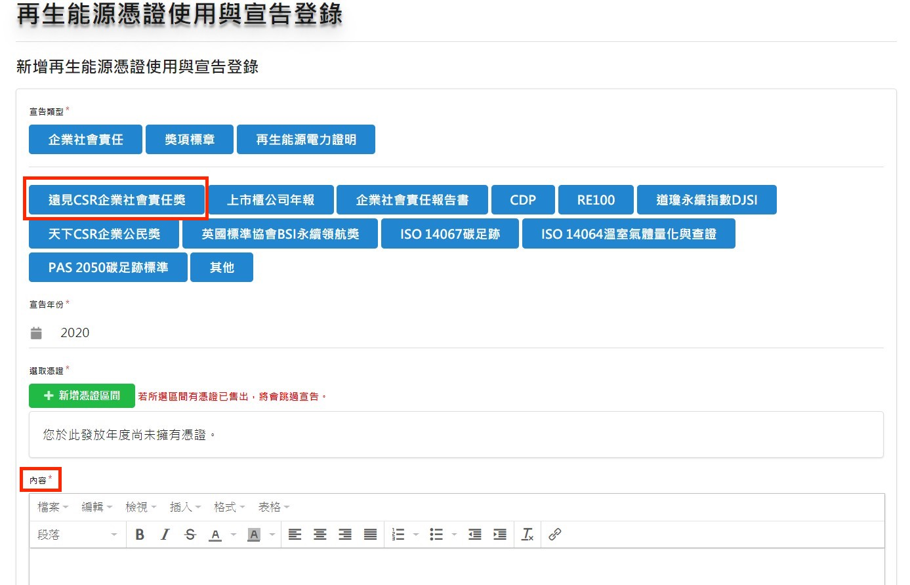

文: 李奕慧/國家再生能源憑證中心
隨著國內對永續發展的重視程度日漸增加，在政府與民間推動企業社會責任(Corporate Social Responsibility, 簡稱CSR)的共同努力之下，企業遵守社會責任的風氣更是日益興盛，其中又以《遠見雜誌》CSR企業社會責任獎與《天下雜誌》天下企業公民獎，在國內企業社會責任獎項中具有指標性的領導地位，自2021年起憑證中心將和遠見雜誌與天下雜誌特針對填答企業需完成宣告程序進行覆核，提醒持有憑證之企業在填答問卷後，須盡速回到官網完成使用與宣告登錄，始能列入該項目計分。
資料來源: 遠見雜誌網站
在國內企業社會責任領域深耕16年的遠見雜誌，是首家發起企業社會責任大調查的華人媒體，具高度公信力，歷年來參賽件數更高達2000多件，在CSR企業社會責任獎【年度大調查】中完整評鑑企業全方位的CSR表現，並依據產業類型分為傳統產業、電子科技業、金融保險業、服務業、電信業等五大產業，企業持有再生能源憑證可做為【年度大調查】評分項目之佐證資料，憑證中心也歡迎持有再生能源憑證的企業主動報名並持續發揮企業品牌影響力，帶動更多企業使用再生能源，降低碳排。
隨著越來越多企業重視並投入CSR或ESG等相關國內外評比，憑證中心提醒憑證企業用戶在使用T-REC作為環境或能源評比之佐證資料後，務必回到「國家再生能源憑證中心」平台完成「宣告登錄」，始具效力，中心也會定期和國內外相關單位完成宣告資料勾稽，以核實各企業憑證使用情況，避免環境效益重複計算。
「再生能源憑證使用與宣告登錄」頁面
會員登入帳號後可透過功能選單選取「再生能源憑證使用與宣告登錄」，點選右上角「新增」後即可逐筆登錄，隨後選擇宣告類型中企業社會責任的「遠見CSR企業社會責任獎」，即可在「內容」中登錄本次於CSR企業社會責任獎中憑證使用情形或實際宣告之文字，並上傳貴司於CSR企業社會責任獎之申請文件，即完成該用途之宣告登錄。
「新增再生能源憑證使用與宣告登錄」頁面
環境、社會與公司治理(ESG)議題已廣受國際重視，企業透過再生能源憑證可以證明其對於潔淨能源的支持和減少碳排上的實際環境效益，提醒企業在應用憑證後需回到再生能源憑證中心網站完成使用宣告，才是善盡憑證持有者的責任。